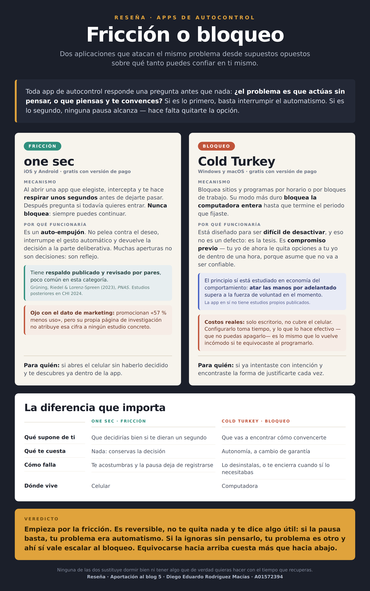
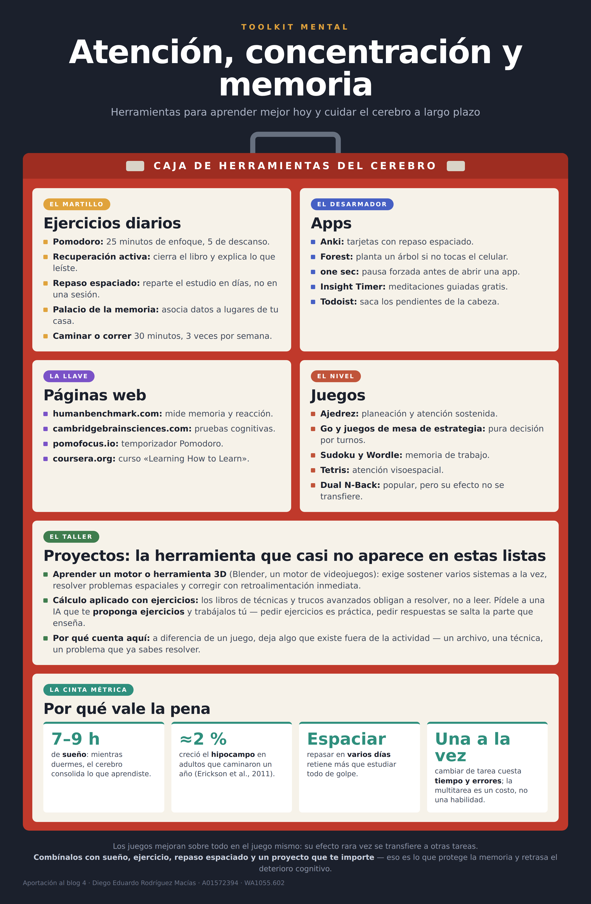

Registro de las aportaciones del curso. Cada entrada responde a la misma pregunta de fondo: qué hace que un estudiante en riesgo académico se quede o se vaya, y qué de eso se puede cambiar.
Aportación 7 · Videopodcast
Medir le gana a planear
Las estrategias que funcionan no son las que elegiste bien: son las que sobrevivieron a tus condiciones.
7 de noviembre de 2026 · Diego Eduardo Rodríguez Macías
Esta entrada guarda el material completo del videopodcast. El video tenía límite de duración, así que varias piezas se quedaron fuera de la grabación; aquí están todas, con las fuentes y las figuras que las sostienen.
La ignorancia como primer pilar
La ignorancia es el primer pilar a tomar en cuenta a la hora de desarrollar un pensamiento crítico y a llenar el espacio donde determinarás las estrategias de estudio y retención de temas. Es el punto uno que propicia a la mala toma de decisiones, sea el que sea tu esquema. Y lo peligroso viene acompañado de la sorpresa que te echas para atrás que suelen tener las personas por más listas que se crean.
Empecé el semestre con una actitud muy centrada en todo lo que creí que me serviría, y ya tenía bastantes conceptos avanzados, como optimización de estructuras algorítmicas. Aunque eso sirvió de un cacahuate, y aun así las materias en las que más aprendí fueron electromagnetismo, electricidad, biología computacional y cálculo multivariable: justo en las que me fue peor y reprobé. Tenía todas las piezas y ningún plano.
Esto deja claro que aprender más es relativo. Aprender más tiene que ser sólido; si no, es simplemente un aprender más ignorante y mal cimentado. El semestre pasado seguí el pretexto de que estudiando bien a tus horas podrás sacar varias materias bien, cuando eso solo me presionaba de forma destructiva: medir la jornada por horas invertidas en lugar de por avance real.
Por qué no se nota: la compensación
El modo de falla más común no es estar mal en todo, sino compensar: la persona invierte en la dimensión donde ya es competente, obtiene resultados visibles ahí y en consecuencia interpreta esa competencia como salud general. De ahí que separar las dimensiones sirva precisamente para que esa sustitución se note. Es regar la planta que ya está verde.
Por qué el promedio no describe a nadie. El promedio general diría 50 y no describiría ninguno de los seis ejes. Valores ilustrativos. Elaboración propia.
El instrumento: cómo se mide por dimensiones
El modelo viene de un instrumento que diseñamos en Semana Tec para medir hábitos por dimensiones. Cada dimensión se califica por separado y el peso se aplica dentro de la dimensión, no sobre el total:
De ahí salen cinco reglas, y las cinco son decisiones de diseño con consecuencia:
Escala de cero a cien por dimensión, sin puntaje total. Un número único invita a compararse y esconde lo accionable.
El peso se aplica por dimensión y no global. Las preguntas aplicables no son las totales, y dividir sobre el total castigaría a quien tenía menos.
Si dos dimensiones covarían alto, una sola intervención impacta ambas. Eso es eficiencia de inversión, no causalidad.
La matriz de acoplamiento es asimétrica, y la regla práctica pide unas diez observaciones por parámetro, así que una sola medición no estima nada.
Se evalúa mejora y no nivel, porque quien vive cerca y camina no hizo ningún esfuerzo, y quien cambió de auto solo a compartido sí.
Quince relaciones escondidas en una matriz de seis. Con seis dimensiones la matriz tiene quince correlaciones únicas, porque es simétrica y la diagonal vale uno: n(n−1)/2. Valores ilustrativos. Elaboración propia.
El instrumento no predice. Diagnostica y recomienda. La matriz de acoplamiento, que es la que diría qué eje mueve a cuál, es asimétrica: con cinco dimensiones serían veinticinco coeficientes, y la regla práctica pide unas diez observaciones por parámetro.
Con una sola medición no se estima nada, y por eso aquí se presenta como forma de pensar y no como modelo validado.
Tres estrategias y qué pasó con cada una
La primera fue cambiar la técnica. Reconocer no es lo mismo que recuperar: reconoces una cara en la calle y no podrías dibujarla de memoria. Por eso subrayar es ordenar el cuarto y decir que ya estudiaste, y por eso si estudiar se siente cómodo, probablemente no estás estudiando. Dejé de releer apuntes y empecé a escribir el tema con mis propias palabras, cerrando antes el material. Ese trabajo era de Arquitectura de Sistemas Mínimos, y saqué ochenta y ocho.
La segunda fue el sueño. La memoria se consolida durante el sueño y no durante el estudio, así que desvelarse para estudiar implica pagar el costo del esfuerzo sin obtener el producto. Dormir después de estudiar es parte del estudio. Desvelarse para estudiar es escribir el archivo y apagar sin guardar.
La tercera fue medir la carga, y fue lo más difícil del semestre. Incluso con poquito tiempo, bien distribuido y aplicado, da más resultado. Era mejor dar de baja las que no convinieran, porque no te metes al elevador lleno aunque lleves prisa. Desde entonces la regla es explícita: se pausa cuando la carga académica lo exige.
Lo más fácil, en cambio, fue algo que creí complicado: un desacuerdo con una profesora, que resolví llegando puntual en lugar de discutirlo.
Los casos: dónde se rompe el salto entre lo medido y lo afirmado
Todo el argumento descansa en distinguir lo que un estudio midió de lo que después se afirmó con él. Estos cinco casos son los que usé, con el dato concreto y lo que cada uno prueba.
Caso
El dato
Lo que prueba
Luz azul y sueño
Revisión de 73 estudios con 113,370 participantes: el retraso atribuible a la luz de pantallas es de unos 2.7 minutos. El modo nocturno existe desde 2016
Ningún estudio mintió: falló el salto de lo medido a lo afirmado
Ratnayake et al. (2018)
Experimento en cultivos celulares, sin ojos, sin personas y sin pantallas. La Academia Americana de Oftalmología lo desmintió públicamente y el autor emitió una aclaración
La corrección nunca alcanza al titular
Hormigas y tráfico
170 experimentos con 35 colonias y puentes de 5, 10 y 20 mm: el flujo se mantiene plano hasta ocupación 0.8, mientras el de coches y peatones se desploma pasando 0.4
Regular la entrada, no la velocidad de adentro
Anternet
Las hormigas deciden cuántas salen según cuántas regresan con comida, con la misma lógica de control de congestión que usa TCP
Ajustar según el resultado, no según el esfuerzo
Raup (1966)
Tres parámetros —expansión de la espira, distancia al eje y traslación— generan el espacio de todas las conchas posibles. Lo que existe ocupa una fracción pequeña
Lo que funciona es el residuo de lo que no falló
Lo que cada estudio midió, y lo que autoriza concluir. Los cinco casos del videopodcast, con el dato medido y la conclusión que autoriza.
Las hormigas: el mecanismo no es el que parece
Lo interesante del estudio de las hormigas no es que no se atasquen, sino por qué no se atascan. No es que avancen mejor adentro del puente: es que no entran a un puente saturado. La densidad nunca superó unas 18 hormigas por centímetro cuadrado, y cada contacto entre dos cuesta alrededor de 0.24 segundos. Tampoco forman carriles, que es lo que suele suponerse.
Donde el humano colapsa y la hormiga no. El flujo de las hormigas se mantiene donde el tránsito humano se derrumba. Forma basada en Poissonnier et al. (2019), eLife 8:e48945. Elaboración propia.
La frase que une los dos casos de hormigas: ninguno de los dos evita el colapso trabajando más rápido por dentro. Los dos regulan la entrada según lo que les regresa.
Nota de rigor. Un estudio de hormigas describe hormigas. El traslado a un estudiante es analogía, no evidencia, y conviene decirlo en voz alta antes de usarlo.
Raup: el espacio de lo posible está casi vacío
Muchos piensan que la naturaleza es sabia, cuando en realidad lo que hace es encontrar la estabilidad en un eje específico y adoptarla cuando se presente algo que lo permita. Raup describió todas las conchas posibles con tres parámetros, y el cubo que generan está casi vacío: no porque la naturaleza eligiera no ir ahí, sino porque esas formas no se sostienen.
El vacío que no es casualidad. El morfoespacio está casi vacío porque esas formas no se sostienen, no porque nadie las haya intentado. Esquema basado en Raup (1966). Elaboración propia.
Cómo se usa esto
La clave es encontrar a qué ejes les falta más y enlistar acciones clave, o bien usar creatividad para encontrar aquella que pueda abordarlos mejor. A lo largo de las mediciones verás qué tantos cambios hubo, con cambios en crudo, porque una foto no es una película: con una sola medición no sabes si subes o bajas. Y mide cada eje por separado, nunca con un promedio general.
Tus estrategias no tienen por qué ser rígidas. Ahí tienes un modelo que te sirve para medir y comparar, sin necesidad de seguir constantemente instrucciones de mejora de los demás, pues tú las encuentras con esta herramienta multidimensional.
Cierro el semestre con tres materias que arrastraba resueltas: Modelación Matemática Intermedia, Experimentación en Física Estadística y Arquitectura de Sistemas Mínimos. Y de qué sirve ir a estudiar a una universidad para algo. Tienes que entender para qué vas a sentarte, no a calentar las aulas.
Eso es lo que me llevo de las materias de mejoramiento académico. Las estrategias que funcionan no son las que elegiste bien, son las que sobrevivieron a tus condiciones. Por eso medir le gana a planear. Y cuando tienes dudas de algo, no dejarte caer en la inseguridad: la forma de romperlo es sabiendo diferenciar entre sesgos.
Declaración de uso de IA. La abstracción, las definiciones y el contenido son propios. Se usó IA para resúmenes de las fuentes consultadas, para la redacción de las figuras retóricas sobre ideas ya planteadas por mí, para la generación de las gráficas y para el montaje del video.
Dunlosky, J., Rawson, K. A., Marsh, E. J., Nathan, M. J., & Willingham, D. T. (2013). Improving students' learning with effective learning techniques. Psychological Science in the Public Interest, 14(1), 4–58. https://doi.org/10.1177/1529100612453266
Grüning, D. J., Riedel, F., & Lorenz-Spreen, P. (2023). Directing smartphone use through the self-nudge app one sec. Proceedings of the National Academy of Sciences, 120(8). https://doi.org/10.1073/pnas.2213114120
Poissonnier, L.-A., Motsch, S., Gautrais, J., Buhl, J., & Dussutour, A. (2019). Experimental investigation of ant traffic under crowded conditions. eLife, 8, e48945. https://doi.org/10.7554/eLife.48945
Prabhakar, B., Dektar, K. N., & Gordon, D. M. (2012). The regulation of ant colony foraging activity without spatial information. PLoS Computational Biology, 8(8), e1002670. https://doi.org/10.1371/journal.pcbi.1002670
Ratnayake, K., Payton, J. L., Lakmal, O. H., & Karunarathne, A. (2018). Blue light excited retinal intercepts cellular signaling. Scientific Reports, 8, 10207. https://doi.org/10.1038/s41598-018-28254-8
Raup, D. M. (1966). Geometric analysis of shell coiling: General problems. Journal of Paleontology, 40(5), 1178–1190.
Simons, D. J., Boot, W. R., Charness, N., Gathercole, S. E., Chabris, C. F., Hambrick, D. Z., & Stine-Morrow, E. A. L. (2016). Do "brain-training" programs work? Psychological Science in the Public Interest, 17(3), 103–186. https://doi.org/10.1177/1529100616661983
Aportación 6 · Estrategias de autocuidado
Regar la planta que ya está verde
El modo de falla más común no es estar mal en todo, sino invertir donde ya eras bueno y leer esa competencia como salud general.
19 de octubre de 2026 · Diego Eduardo Rodríguez Macías
El autocuidado personal es el conjunto de acciones deliberadas que una persona realiza por sí misma, de forma sostenida y dentro de su rutina, para mantener, recuperar y desarrollar su bienestar en varias dimensiones de su vida.
Qué incluye el autocuidado personal
Incluye aquellas acciones deliberadas que una persona realiza por sí misma, de forma sostenida y dentro de su rutina, con el fin de mantener, recuperar y desarrollar su bienestar en varias dimensiones de su vida: física, emocional, social, intelectual, ocupacional y ambiental, entre otras. Abarca tanto prevenir el deterioro como reponerse de él. Puesto que su finalidad es el florecimiento de la persona y no el cumplimiento de una exigencia externa, las capacidades que de ahí se derivan deben entenderse como consecuencia y no como criterio.
Ahora bien, el que se plantee por dimensiones no es un detalle de clasificación, sino que responde a un problema concreto. El modo de falla más común no es estar mal en todo, sino compensar: la persona invierte en la dimensión donde ya es competente, obtiene resultados visibles ahí y en consecuencia interpreta esa competencia como salud general. De ahí que separar las dimensiones sirva precisamente para que esa sustitución se note.
Regar la planta que ya está verde. El modo de falla más común del autocuidado: invertir en la dimensión donde ya se es competente y leer esa competencia como salud general. Esquema ilustrativo, no datos medidos. Elaboración propia.
Cómo me puedo cuidar emocionalmente
Entre las prácticas que ya sostengo están los bosquejos diarios, la actividad física y conversar con alguien de confianza. Sin embargo, conviene precisar por qué cada una funciona, ya que de eso depende cómo aplicarlas.
En el caso de los bosquejos, lo determinante no es dibujar sino que sean pequeños y terminables, puesto que una tarea completada produce una señal de avance que un proyecto largo no entrega durante semanas. Respecto a la actividad física, la mayor ganancia se obtiene al pasar de cero a poco, por lo que la constancia importa más que la intensidad. Y en cuanto a conversar, es la práctica con mayor respaldo, aunque el efecto proviene de articular la experiencia en lenguaje y no de la descarga emocional; por esta razón, desahogarse sin ordenar puede incluso resultar contraproducente.
No obstante, al revisar esa lista se advierte que casi todas producen algo, de modo que faltan prácticas de otra naturaleza: nombrar lo que se siente, descansar sin obtener un producto, poner límites y dormir, esta última la cual, pese a no parecer emocional, resulta la de mayor palanca.
Por qué es importante atender mis emociones
Dado que la regulación emocional y el control ejecutivo comparten circuito prefrontal, no se trata de dos sistemas distintos que compiten por el tiempo disponible, sino del mismo sistema. Por lo tanto, una emoción sin gestionar consume exactamente el recurso que se necesita para concentrarse, y en consecuencia desatenderla no ahorra capacidad de estudio: la cuesta.
A esto se suma que lo no atendido no desaparece, sino que cambia de canal y se expresa como tensión, alteraciones del sueño, irritabilidad o postergación, es decir, en terrenos donde ya no puede manejarse directamente. Además, las emociones constituyen información sobre el entorno y sobre las propias necesidades, por lo que ignorarlas equivale a descartar un dato. Finalmente, nombrarlas funciona de manera medible, ya que el etiquetado afectivo reduce la activación de la amígdala; de ahí que poner en palabras lo que se siente sea una intervención y no un preámbulo.
Por qué es importante una adecuada higiene del sueño
La razón de mayor peso en el terreno académico es que la memoria se consolida durante el sueño y no durante el estudio. Por consiguiente, desvelarse para estudiar implica pagar el costo del esfuerzo sin obtener el producto, y de ahí que dormir después de estudiar deba entenderse como parte del estudio.
A lo anterior se añade que, en privación de sueño, la amígdala reacciona con mayor intensidad mientras el control prefrontal se debilita; por esta razón, la irritabilidad tras un desvelo responde a un circuito y no al carácter.
Ahora bien, se habla de higiene y no simplemente de dormir más porque el sueño no se fuerza: intentarlo eleva la activación, que es precisamente lo contrario del estado requerido. Puesto que sobre el acto no se puede actuar directamente, se trabaja sobre las condiciones que lo favorecen, es decir, regularidad de horario, exposición a luz matutina, temperatura y separación entre la cama y el trabajo.
Cómo me saboteo por mis malos hábitos
Lo útil aquí es nombrar un mecanismo y no un vicio, ya que de un mecanismo se desprende una acción correctiva mientras que de un vicio no. Los patrones más frecuentes son los siguientes:
Sustituir lo difícil por lo productivo pero no urgente, con lo cual se trabaja mucho y en lo que no correspondía
Alargar la noche debido a que es el único tiempo que se percibe como propio
Postergar el inicio hasta contar con una versión buena, de manera que el perfeccionismo opera como evitación
Medir la jornada por horas invertidas en lugar de por avance real
Qué he hecho como estrategia
Mi estrategia ha consistido en proteger un espacio de trabajo propio, aunque sujeto a una regla explícita: se pausa cuando la carga académica lo exige. Así ocurrió cuando coincidieron varias entregas y detuve el proyecto del mod, estableciendo de antemano el criterio para retomarlo.
El vínculo con el rendimiento académico radica en que ambas cosas no compiten como adversarios por el mismo recurso. Por el contrario, el proyecto repone lo que las materias desgastan y sostiene el sentido del conjunto; por lo tanto, mantenerlo es lo que permite volver a las asignaturas con disposición, mientras que empujar ambos frentes simultáneamente conduce a rendir mal en los dos.
Aportación 5 · Reseña
Fricción o bloqueo
one sec y Cold Turkey resuelven el mismo problema desde supuestos opuestos sobre qué tanto puedes confiar en ti mismo.
15 de octubre de 2026 · Diego Eduardo Rodríguez Macías
Toda aplicación de autocontrol contesta una pregunta antes de hacer cualquier otra cosa: ¿el problema es que actúas sin pensar, o que piensas y te convences? Si es lo primero, basta con interrumpir el gesto automático. Si es lo segundo, ninguna pausa va a alcanzar, porque la vas a atravesar con un argumento.
Busqué dos aplicaciones que representaran cada respuesta. No son dos categorías excluyentes ni dos tipos de persona: son dos mecanismos distintos, y cuál conviene depende de cuál de los dos problemas tengas.

Pausa contra candado, lado a lado. Elaboración propia a partir de la documentación oficial de cada producto y del artículo de Grüning et al. (2023).
one sec: interrumpir el gesto
Cuando abres una aplicación que tú elegiste marcar, one sec intercepta la apertura y te hace respirar unos segundos antes de dejarte pasar. Al terminar, pregunta si todavía quieres entrar. Nunca bloquea: siempre puedes continuar.
Lo interesante es el supuesto detrás. No pelea contra el deseo ni te quita la opción: interrumpe el automatismo y devuelve la decisión a la parte deliberativa. Parte de que muchas aperturas de aplicación no son decisiones sino reflejos, y que si te devuelven un segundo, decides distinto.
Está disponible en iOS, iPadOS, Android y como extensión de navegador en escritorio. Tiene versión gratuita con funciones limitadas.
Cold Turkey: decidir el límite antes
Bloquea sitios y programas por horario o por bloques de trabajo. En su modo más estricto bloquea la computadora entera hasta que termine el periodo que fijaste.
Lo que lo define es que está diseñado para ser difícil de desactivar, y eso no es un defecto de usabilidad: es la tesis del producto. Funciona como un dispositivo de compromiso: tu yo de ahora le quita opciones a tu yo de dentro de una hora, porque asume que ese no va a ser confiable. Es el mismo principio que estudian Bryan, Karlan y Nelson (2010) en economía del comportamiento: atarse las manos por adelantado supera a la fuerza de voluntad en el momento.
Solo funciona en Windows y macOS. No cubre el celular, que para muchos es justamente donde está el problema.
La diferencia que importa
Enfoque comparado
one sec · pausa
Cold Turkey · bloqueo
Qué supone de ti
Que decidirías bien si te dieran un segundo
Que vas a encontrar cómo convencerte
Decisión y autonomía
Durante la pausa puedes reconsiderar y elegir continuar o salir
Las restricciones se acuerdan antes; el candado limita los cambios
Qué te cuesta
Nada: conservas la decisión en todo momento
Autonomía, a cambio de una garantía
Cómo falla
Te acostumbras y la pausa deja de registrarse
Lo desinstalas, o te cierra el acceso que sí necesitabas
Dónde vive
Celular y navegador de escritorio
Windows y macOS; no cubre el celular
La diferencia que importa. Se comparan modos concretos de cada herramienta, no dos categorías excluyentes ni rasgos de personalidad.
Qué sabemos y qué no
one sec promociona una reducción del 57 % y esa cifra sí está documentada, pero importa mucho qué mide exactamente.
−57 %aperturas reales de las aplicaciones seleccionadas, no tiempo total de pantalla. Son dos métricas distintas y la diferencia no es menor (Grüning et al., 2023).
El estudio de campo del que sale ese número fue exploratorio: participantes autoseleccionados, sin grupo de control. Empezaron 719 personas y el análisis principal se hizo con las 280 que completaron el seguimiento, lo cual es una pérdida considerable. Y conviene saberlo: uno de los autores es el creador de la aplicación.
El mismo trabajo incluye un experimento aleatorizado aparte, con unos 500 participantes, que separó los componentes de la intervención. Ahí el efecto mayor vino de ofrecer explícitamente la opción de desistir; el retraso también ayudó, pero el mensaje de reflexión por sí solo no fue efectivo. Eso es más informativo que la cifra grande, porque dice qué parte del mecanismo hace el trabajo.
Cold Turkey no tiene estudios propios. Lo que existe es el marco conceptual de los dispositivos de compromiso, que está bien estudiado, pero eso valida el principio y no esta implementación en particular. La documentación del producto describe funciones; no aporta un ensayo de eficacia.
Veredicto
Empieza por la fricción. Es reversible, no te quita nada y te da información útil: si la pausa basta, tu problema era automatismo. Si la atraviesas sin pensarlo, tu problema es otro y ahí sí vale escalar al bloqueo. Equivocarse hacia arriba cuesta más que hacia abajo.
Empieza con una configuración breve y revisable, observa qué te ayuda y ajusta el modo a tu contexto. Ninguna de las dos elimina la necesidad de hábitos, de descanso ni de tener un propósito para el tiempo que recuperas. Esta valoración es mi opinión a partir de lo que encontré, no una recomendación clínica.
Grüning, D. J., Riedel, F., & Lorenz-Spreen, P. (2023). Directing smartphone use through the self-nudge app one sec. Proceedings of the National Academy of Sciences, 120(8). https://doi.org/10.1073/pnas.2213114120
one sec. (s. f.). Cut your screen time in half. Recuperado el 15 de octubre de 2026, de https://one-sec.app/
Ejercicios, apps, páginas, juegos y proyectos para sostener la atención y cuidar la memoria a largo plazo.
15 de octubre de 2026 · Diego Eduardo Rodríguez Macías
Armé esta caja de herramientas con cinco compartimentos: ejercicios para hacer a diario, aplicaciones, páginas para medir y practicar, juegos, y uno que casi nunca aparece en listas de este tipo pero que creo que es el más importante.

Caja de herramientas de atención, concentración y memoria. Elaboración propia.
Por qué agregué el compartimento de proyectos
Mientras buscaba me topé con algo que cambió lo que tenía sentido recomendar: el efecto de los juegos de entrenamiento cerebral no se transfiere. Mejoras en el juego que practicas y esa mejora casi no aparece en otras tareas. Simons et al. (2016) revisaron la literatura completa de programas comerciales y encontraron evidencia escasa de beneficios fuera de lo entrenado; el Dual N-Back, el caso más famoso, tuvo resultados iniciales prometedores y después fallos de replicación.
Eso no los vuelve inútiles. Un juego de estrategia por turnos exige atención sostenida en lugar de fragmentarla, que es bastante mejor que el desplazamiento infinito en redes. Pero no te vuelve mejor en otra cosa, y conviene saberlo antes de invertirle horas creyendo que sí.
Lo que sí construye capacidad es aprender algo difícil de verdad. La prueba que separa una cosa de la otra: ¿la actividad deja algo que exista fuera de ella? Un archivo, una técnica, un problema que ahora sabes resolver. Si la respuesta es no, es entretenimiento, y está bien que lo sea mientras no lo confundas con entrenamiento.
Por eso el quinto compartimento es el taller. Aprender Blender o un motor de videojuegos obliga a sostener varios sistemas a la vez y a corregir con retroalimentación inmediata, y lo que construyes sigue ahí cuando cierras el programa. Los libros de cálculo aplicado funcionan mejor que los de teoría pura porque obligan a resolver, y ahí la inteligencia artificial tiene un uso legítimo si le pides ejercicios y los trabajas tú, en lugar de pedirle respuestas.
El panel de datos recoge lo que más efecto tiene y menos se parece a una herramienta: dormir, moverse, espaciar el repaso y hacer una cosa a la vez. Nada de eso se descarga, y sospecho que por eso existe el mercado de aplicaciones que prometen lo mismo.
Referencias
Erickson, K. I., Voss, M. W., Prakash, R. S., Basak, C., Szabo, A., Chaddock, L., … Kramer, A. F. (2011). Exercise training increases size of hippocampus and improves memory. Proceedings of the National Academy of Sciences, 108(7), 3017–3022. https://doi.org/10.1073/pnas.1015950108
Simons, D. J., Boot, W. R., Charness, N., Gathercole, S. E., Chabris, C. F., Hambrick, D. Z., & Stine-Morrow, E. A. L. (2016). Do "brain-training" programs work? Psychological Science in the Public Interest, 17(3), 103–186. https://doi.org/10.1177/1529100616661983
Aportación 3 · Esquema
Lo que se siente fácil
Las dos técnicas de estudio que más usa todo el mundo son las dos que menos funcionan, y hay una razón para que se sientan bien.
24 de octubre de 2026 · Diego Eduardo Rodríguez Macías
Cuando busqué sugerencias para aprender mejor esperaba una lista de consejos sueltos. Lo que encontré fue mejor: una revisión que evaluó diez técnicas de estudio con la evidencia disponible y las ordenó por utilidad. Dunlosky y sus colegas (2013) las clasificaron en tres niveles, y el resultado tiene una incomodidad que vale la pena mirar de frente.
Subrayar y releer, que es lo que hace casi todo el mundo, quedaron en el nivel más bajo.
Las diez técnicas, ordenadas por lo que las sostiene. Elaboración propia a partir de Dunlosky et al. (2013).
Por qué lo que no funciona se siente tan bien
Esta es la parte que me pareció más útil de entender. Cuando relees un capítulo por tercera vez, el texto te resulta cada vez más familiar, y el cerebro interpreta esa fluidez como señal de que ya lo sabes. Pero reconocer no es lo mismo que recuperar. En el examen nadie te muestra el texto: te pide que lo saques de la memoria, que es exactamente la operación que no practicaste.
De ahí sale la regla que resume todo el esquema: si estudiar se siente cómodo, probablemente no estás estudiando. Las técnicas que funcionan se sienten más difíciles mientras las haces, y esa dificultad es justamente el trabajo.
Lo que cambié yo
Dejé de releer apuntes y empecé a escribir el tema con mis propias palabras, cerrando antes el material. Lo noté con un trabajo sobre la organización interna de una memoria RAM: después de redactarlo pude explicar de dónde salía cada dato del encapsulado sin volver a consultarlo, cosa que no me pasaba cuando solo leía.
Es práctica de recuperación disfrazada de tarea, y funciona por la misma razón.
Cómo empezar sin rehacer todo
Las dos de utilidad alta no piden material nuevo ni más horas, solo cambiar el orden de lo que ya haces. En lugar de leer el tema otra vez, cierra el cuaderno y escribe lo que recuerdes; lo que falte es exactamente lo que hay que repasar. Y en lugar de dejar el estudio para la víspera, parte el mismo tiempo total en sesiones separadas.
Las de utilidad moderada valen la pena cuando ya tienes esas dos. Y las de utilidad baja no hay que abandonarlas del todo: subrayar sirve para marcar qué releer después, siempre que no se confunda con haber estudiado.
Una precisión sobre la clasificación. "Utilidad baja" no significa que no sirvan nunca, sino que la evidencia de que mejoren el aprendizaje en distintas materias, tipos de estudiante y formatos de examen es débil. Dunlosky et al. evaluaron cada técnica en esas cuatro dimensiones, no solo en si funciona alguna vez.
Referencias
Dunlosky, J., Rawson, K. A., Marsh, E. J., Nathan, M. J., & Willingham, D. T. (2013). Improving students' learning with effective learning techniques: Promising directions from cognitive and educational psychology. Psychological Science in the Public Interest, 14(1), 4–58. https://doi.org/10.1177/1529100612453266
Aportación 2 · Hábitos
Diez hábitos de personas altamente exitosas
Casi ninguno es una preferencia personal: todos son la respuesta a un problema concreto que esa persona tuvo, y por eso los sostiene.
2 de septiembre de 2026 · Diego Eduardo Rodríguez Macías
Buscando hábitos de personas exitosas aparece siempre la misma lista de rutinas matutinas, pero al revisar de dónde salen esos hábitos aparece algo más interesante: casi ninguno es una preferencia personal. Todos son la respuesta a un problema concreto que esa persona tuvo, y por eso los sostiene.
Reuní diez hábitos de cinco personas de campos distintos, con lo que cada una tuvo que vencer para adoptarlos.
Atención o proceso, y lo que cada uno tuvo que vencer. Los diez hábitos separados en esos dos grupos, con el obstáculo que cada uno tuvo que vencer. Elaboración propia.
Bill Gates, cofundador de Microsoft
Hábito 1. Las semanas de reflexión. Dos veces al año Gates se aísla una semana completa en una cabaña, sin agenda ni reuniones, únicamente con libros, artículos y propuestas que fue acumulando durante meses. Lo promueve porque considera que las decisiones de rumbo no salen entre juntas, sino de bloques largos de lectura sin interrupción, ya que el trabajo diario consume justamente la atención que se necesita para pensar a años de distancia. Para adoptarlo tuvo que romper con la idea de que un director debe estar siempre disponible, puesto que desaparecer una semana entera mientras la empresa competía en su etapa más agresiva era exactamente lo contrario de lo que dictaba el sentido común corporativo.
Hábito 2. Leer anotando y terminar lo que se empieza. Gates lee alrededor de cincuenta libros al año, escribe notas en los márgenes y se impone la regla de terminar todo libro que abre. Lo recomienda porque anotar lo obliga a discutir con el autor en lugar de consumir el texto de forma pasiva, de modo que la diferencia no está en cuántos libros leyó sino en cuántos puede usar después. La regla de terminar existe precisamente porque tuvo que vencer el impulso contrario, que es saltar al siguiente libro apenas el actual se pone difícil.
Satya Nadella, director general de Microsoft
Hábito 3. Mentalidad de aprenderlo todo en lugar de saberlo todo. Nadella adoptó de manera explícita la idea de mentalidad de crecimiento de la psicóloga Carol Dweck y la volvió el eje de la cultura de la empresa, de forma que se valora más a quien aprende que a quien ya sabe. Lo promueve porque una organización donde nadie admite ignorancia no puede cambiar de dirección, y bajo esa mentalidad Microsoft terminó adoptando tecnología que antes trataba como enemiga, incluido Linux, además de reorientar el negocio hacia la nube. Lo que tuvo que cambiar no fue un hábito personal sino una cultura interna de competencia entre equipos donde decir que no sabes algo se leía como debilidad.
Hábito 4. Preguntarse qué agradece antes de cualquier pantalla. Lo primero que hace Nadella al despertar es preguntarse por qué está agradecido, antes de revisar correo o noticias, y después dedica media hora a correr sin importar en qué zona horaria esté ni a qué hora se durmió. Lo recomienda porque dice que el ejercicio lo aterriza y le da la capacidad de orientarse para el día, es decir que lo usa para decidir desde dónde entra a trabajar en lugar de que la primera notificación se lo decida. No es una idea propia sino un hábito que tomó de Michael Gervais, psicólogo del rendimiento que ha trabajado con empleados de Microsoft y con los Seattle Seahawks, así que tuvo que vencer la costumbre de empezar el día reaccionando a la bandeja de entrada.
Oprah Winfrey, productora y empresaria de medios
Hábito 5. Meditar dos veces al día. Winfrey practica meditación trascendental veinte minutos por la mañana y veinte por la tarde, y llegó a implementarla también para el personal de su productora. Sostiene que baja la reactividad y permite decidir desde la calma, lo cual importa en un trabajo de exposición permanente donde cada respuesta es pública. Tuvo que vencer el agotamiento de décadas frente a cámara y también la creencia, muy común cuando la agenda está saturada, de que detenerse veinte minutos es tiempo perdido.
Hábito 6. Leer de forma constante y transversal. Lee de manera continua y deliberadamente variada, incluyendo géneros y perspectivas que no coinciden con la suya, hábito que además convirtió en club de lectura público. Lo promueve porque leer fuera de su propio mundo es lo que le permite conectar con audiencias de cualquier origen, de manera que la lectura funciona para ella como herramienta de trabajo y no solo como recreación. Lo que tuvo que vencer está en su origen, ya que creció en pobreza severa y con acceso muy limitado a la educación, así que el hábito nació como forma de salir de un entorno que no ofrecía ese material.
Jens Bergensten, director creativo de Mojang y líder de Minecraft
Hábito 7. Producir en game jams y guardar lo que sobrevive. Antes de trabajar en Minecraft, Bergensten y su equipo descubrían juegos nuevos asistiendo a game jams, donde con un tema aleatorio y un límite de treinta y dos o cuarenta y ocho horas tenían que producir algo jugable. Él mismo describe que de ahí salía basura o salía algo interesante, y lo interesante iba a parar a una pila que revisaban después, cuando de verdad tocaba arrancar un proyecto de lanzamiento. Lo promueve porque el límite de tiempo obliga a llegar a algo que se pueda probar en lugar de quedarse planeando, y porque nada de lo bueno se desperdicia aunque el proyecto en sí se abandone. Lo que tuvo que vencer es la resistencia natural a soltar un trabajo que no funcionó, dado que el método solo sirve si aceptas que la mayoría de los intentos van a la basura.
Hábito 8. Moverse o cambiar de lugar cuando se atora. Cuando se queda atascado resolviendo un problema, Bergensten dice que hace lo clásico, que es salir a caminar o andar en bici para tener flujo sanguíneo, y que si el bloqueo es más profundo entonces cambia de lugar de trabajo por completo. De hecho antes viajaban a Berlín porque ahí hay cibercafés abiertos las veinticuatro horas, y se encerraban a construir algo. Lo recomienda porque forzarse frente al monitor no produce la solución, mientras que el cambio de entorno sí, de modo que trata el estancamiento como una señal para moverse y no para insistir. Tuvo que vencer el hábito contrario, que es quedarse horas frustrado creyendo que rendirse un rato equivale a rendirse.
Shigeru Miyamoto, diseñador de videojuegos en Nintendo
Hábito 9. Voltear la mesa. Miyamoto es conocido por estar dispuesto a rehacer un diseño desde cero aunque el proyecto lleve meses de avance, si al probarlo no resulta divertido, práctica que dentro de Nintendo se conoce como voltear la mesa. Lo promueve porque el jugador nunca va a saber cuánto costó algo y solo va a notar si funciona, así que proteger el trabajo ya invertido perjudica el resultado. Lo que tuvo que vencer es doble, ya que se trata de la falacia del costo hundido y además de la presión de calendario de un estudio comercial, donde tirar meses de trabajo es caro y políticamente incómodo.
Hábito 10. Sacar las ideas de aficiones fuera del trabajo. En lugar de buscar ideas frente al escritorio, Miyamoto diseña a partir de su vida cotidiana, y los ejemplos son directos, puesto que Zelda nació de explorar cuevas y campos cuando era niño, Pikmin de trabajar en su jardín y Nintendogs de convivir con su perro. Lo recomienda porque un diseñador con intereses fuera de su propio medio produce cosas que no se parecen a lo que ya existe, mientras que quien solo consume videojuegos termina haciendo variaciones de videojuegos. Tuvo que vencer la creencia, bastante extendida en la industria, de que la creatividad se produce acumulando horas frente a la pantalla.
Conclusión
Los diez hábitos se separan en dos grupos. Gates, Nadella y Winfrey trabajan sobre la atención, es decir qué mirar, durante cuánto tiempo y con qué disposición entrar al día. Bergensten y Miyamoto trabajan sobre el proceso, o sea qué hacer con el trabajo propio cuando no está funcionando.
Lo que tienen en común es que ninguno describe el éxito como un momento, ya que todos lo describen como algo que se sostiene o se corrige a lo largo del tiempo, y que en los cinco casos el hábito nació de un problema real y no de una preferencia.
Cuáles implementé yo
Tres de los diez ya estaban en mi forma de trabajar antes de investigarlos. Lo que me aportó la investigación no fue adoptarlos, sino entender por qué funcionan, y en un caso corregir cómo los estaba aplicando.
Hábito 7, producir contra reloj y guardar lo que sobrevive: parcialmente, y con una corrección. La lógica de Bergensten es que el límite de tiempo obliga a llegar a algo que se pueda probar en lugar de quedarse planeando. Yo trabajo así solo en casos extremos, y ahí es donde ese método rinde: en el borde. Pero lo que hace potente al método que estoy estructurando en mis proyectos es justamente lo contrario de la jam: que se puede llegar al borde con casi la misma eficacia desde dentro de lo que ya tienes implementado, sin necesidad del reloj. Medir antes de tocar nada y conservar solo lo que aguanta la medición produce el mismo efecto de descartar, sin la presión de treinta y dos horas.
Hábito 9, voltear la mesa: sí, y es el más difícil de los tres. Rehacer algo desde cero cuando al probarlo no funciona, con trabajo ya invertido encima. Lo que hay que vencer no es pereza: es la falacia del costo hundido, y eso no se resuelve una vez, se vuelve a presentar en cada proyecto.
Hábito 2, en su variante de escribir con mis propias palabras: sí. Es lo mismo que documenté en la aportación 3, cuando dejé de releer apuntes y empecé a escribir el tema cerrando antes el material. El caso concreto fue un trabajo sobre la organización interna de una memoria RAM: después de redactarlo pude explicar de dónde salía cada dato del encapsulado sin volver a consultarlo.
Y uno que no está en la lista, pero funciona por la misma lógica del hábito 3. Usar herramientas de entrenamiento y construcción, con un criterio claro de dónde sí y dónde no. En lo académico no conviene, porque ahí lo que se está pidiendo es reflexionar y construir uno mismo hasta cierto grado, y saltarse eso vacía el ejercicio. Donde sí rinde es en entornos interactivos de desarrollo, como trabajar en game dev dentro del editor: ahí tener un agente me sirve para formular preguntas y discusiones clave, no para producir el trabajo. En esos entornos cada decisión abre otras tres, y lo que de verdad cuesta no es responder, es darse cuenta de qué hay que preguntar. Con el tiempo eso desarrolla un pensamiento crítico que permite identificar patrones de desarrollo en el propio entorno, que es la misma idea de Nadella de aprenderlo todo en lugar de saberlo todo.
Los que no adopté. El hábito 4 de Nadella, agradecer antes de cualquier pantalla, y el 5 de Winfrey, meditar dos veces al día.
Paumgarten, N. (2010, 20 de diciembre). Master of play. The New Yorker.
Aportación 1 · Infografía
Administración del tiempo: nivel up
Los descansos programados funcionan, pero la proporción exacta de trabajo y descanso no tiene fórmula universal. Tres técnicas, lo que sostiene cada una y lo que no.
19 de agosto de 2026 · Diego Eduardo Rodríguez Macías
La administración del tiempo no consiste en llenar cada minuto de actividad, sino en decidir con criterio qué misión merece tu energía. En la vida académica, esto determina si una carga pesada de materias se sostiene con calma o termina quemando toda tu barra de vida.
La evidencia científica confirma que los descansos programados, a diferencia de dejar que el cansancio te sorprenda, reducen la fatiga y mejoran la concentración de forma consistente (Biwer et al., 2023). Sin embargo, la proporción exacta de trabajo y descanso no tiene una fórmula mágica universal: varía según el tipo de tarea y la persona, por lo que vale la pena conocer distintas técnicas y elegir la que mejor se adapte a cada momento.
20 a 45 minutos es el rango en que la atención puede mantenerse óptima antes de fatigarse, según investigación psicológica cognitiva. Es la base real de técnicas como Pomodoro, aunque la proporción exacta de descanso siga siendo flexible.
Tablero de misiones: la matriz de Eisenhower
La matriz de Eisenhower organiza las tareas según dos ejes, urgencia e importancia, permitiendo decidir con claridad qué atender primero. Llené los cuatro cuadrantes con lo que de verdad ocupa mi semestre.
Mi semestre repartido en cuatro cuadrantes. Elaboración propia.
Power-ups: técnicas de enfoque con evidencia real
Contrario a la creencia popular, el intervalo específico de 25 minutos del Pomodoro no proviene de investigación científica formal. Fue una elección personal de su creador, Francesco Cirillo, basada en un temporizador de cocina, no en los ciclos ultradianos de Kleitman ni en investigación controlada de atención (Daybook, 2026).
El principio general de tomar descansos sistemáticos sí está respaldado: un estudio con 87 estudiantes universitarios encontró que quienes tomaban descansos sistemáticos, ya fuera en bloques de 24/6 o de 12/3 minutos, reportaron mayor concentración y motivación, y percibieron las tareas como menos difíciles, comparado con quienes decidían por sí mismos cuándo descansar (Biwer et al., 2023).
El mismo estudio encontró que las pausas tipo Pomodoro generaron un aumento más rápido de fatiga que los descansos autorregulados. No es una técnica sin costos.
Dónde cae cada técnica respecto al rango de atención sostenida. Elaboración propia a partir de Biwer et al. (2023), Daybook (2026) y Brainflow (2026).
Los ciclos ultradianos de 90 minutos de trabajo y 20 de descanso están alineados más de cerca con el rango natural de atención sostenida, extendido en bloques más largos de trabajo profundo. Son útiles para tareas complejas ya dominadas, donde interrumpir cada 25 minutos puede romper el estado de flujo (Brainflow, 2026).
El time blocking asigna cada actividad del día, incluyendo traslados y descansos, a un bloque fijo en el calendario. No depende de una proporción fija de trabajo y descanso, sino de planeación anticipada de la jornada completa.
Y una advertencia sobre las tres
Elegir bien la técnica importa menos de lo que parece, porque el insumo que todas administran, las horas, apenas predice el resultado. Un metaanálisis de 49 estudios y 77 muestras independientes, con casi veinte mil participantes, encontró una correlación de 0.12 entre tiempo de estudio y rendimiento académico, y de 0.09 en el grupo de 18 a 21 años. Los autores dan dos razones: la restricción de rango, porque los universitarios ya son un grupo filtrado por calificaciones y eso aplana cualquier correlación, y que tiempo de estudio no es lo mismo que tiempo de estudio con concentración.
Así se ve una correlación de 0.12. Las dos nubes tienen el mismo número de puntos y están simuladas para ilustrar la magnitud; no son los datos del metaanálisis. Elaboración propia a partir del metaanálisis de tiempo de estudio y rendimiento académico (IAFOR, 2015).
Barra de vida: hábitos de salud
Cuando la logística no permite comer bien antes de salir de madrugada, la estrategia cambia de forma realista: una cena nutritiva la noche anterior aporta las reservas de energía necesarias para el periodo de ayuno matutino, ya que el desayuno normalmente cubre entre 20% y 25% de las necesidades energéticas diarias, y su omisión afecta directamente la atención y el rendimiento académico en las primeras horas de clase (Barrón et al., 2020). Para la mañana, opciones portátiles como pan con mantequilla y mermelada natural de jengibre y naranja, o un licuado de frutas con jengibre, aportan energía sostenida sin picos de glucosa; el jengibre en particular tiene propiedades termogénicas que activan el metabolismo, además de efectos antiinflamatorios y antioxidantes (Infobae, 2025).
Al menos 30 minutos de sol al día, para regulación del ritmo circadiano.
Y el descanso tiene que ser genuino, no solo pasivo. Recostarse sin dormir realmente, en poca luz y sin estimulación, durante periodos prolongados puede generar más fatiga en vez de aliviarla, ya que reduce la exposición a la luz de la que depende el ritmo circadiano y retrasa la acumulación natural de presión de sueño (The Well by Northwell, 2026). Las actividades activas de corta duración, incluidos videojuegos casuales de baja presión como puzzle o simulación en sesiones de 15 a 30 minutos, muestran reducciones consistentes de cortisol después de momentos de estrés agudo, siempre que se eviten mecánicas de retención artificial como eventos por tiempo limitado (Guul Games, 2026; GameLuster, 2026).
La música y las técnicas de enfoque no son universales. La efectividad de la música de fondo depende de la personalidad: las personas extrovertidas suelen beneficiarse de la estimulación externa, mientras que las introvertidas pueden ver su desempeño perjudicado en tareas complejas, debido a diferencias reales en el nivel de activación cortical basal de cada tipo (Küssner, 2017; Harvard Business Review, 2022). El mismo principio aplica a técnicas como mindfulness: no son universalmente efectivas, dependen de la persona, no de si la técnica está correctamente ejecutada.
Aplicación personal
Mi principal reto de administración del tiempo no es la gestión del trabajo en sí, sino la logística de traslado: dependo de que me lleven, lo que me obliga a salir con mucha anticipación algunos días, y mi horario semanal alterna entre salidas muy tempranas y entradas más tardías. Este cambio de ritmo, más que la carga académica en sí, es lo que más afecta mi energía.
Aun así, este tipo de ajuste suele ser temporal y adaptable. Lo verdaderamente importante es que los espacios de descanso sean factibles según las actividades reales del día, no genéricos, y que los descansos activos, como partidas cortas y limitadas de un videojuego, se disfruten sin distraerse del trabajo pendiente que sigue después.
Administrar el tiempo no es hacer más, es jugar bien la partida que tienes.
Referencias
Barrón, G. F., et al. (2020). Hábito y calidad del desayuno: su efecto en el rendimiento académico de estudiantes de técnico de nivel superior en enfermería. SciELO México.
Biwer, F., Wiradhany, W., Oude Egbrink, M. G. A., & de Bruin, A. B. H. (2023). Understanding effort regulation: Comparing 'Pomodoro' breaks and self-regulated breaks. British Journal of Educational Psychology, 93(S2), 353–367.
Brainflow. (2026). Pomodoro study technique complete guide for 2026.
Daybook. (2026). Pomodoro technique research: What science actually says.
GameLuster. (2026). Can video games lower cortisol? 2026 research.
Guul Games. (2026). The relaxation effect: How games reduce stress.
Harvard Business Review. (2022). Does music help you focus?
Infobae. (2025, 3 de abril). Prepara este licuado de manzana y jengibre para desayunar por las mañanas y activar tu cuerpo desde temprano.
Küssner, M. B. (2017). Eysenck's theory of personality and the role of background music in cognitive task performance: A mini-review of conflicting findings and a new perspective. Frontiers in Psychology, 8, 1991.
LifeAt. (2024). The science behind the Pomodoro timer method: Why it works for deep focus.
The Well by Northwell. (2026). Laying in bed all day and still feeling tired? Here's why.